701 moments, in order · fold
- 9:37 AM — Began the adventure
- 9:37 AM — Entered Deepwater Tavern (Wetlands)
- 9:38 AM — Entered Menethil Harbor (Wetlands)
- 9:39 AM — Entered Menethil Bay (Wetlands)
- 9:41 AM — Entered Wetlands
- 9:42 AM — Entered Bluegill Marsh (Wetlands)
- 9:43 AM — Entered Wetlands
- 9:43 AM — Entered Sundown Marsh (Wetlands)
- 9:53 AM — Entered Wetlands
- 9:53 AM — Entered Whelgar's Excavation Site (Wetlands)
- 9:53 AM — First Mottled Scytheclaw slain
- 9:54 AM — First Mottled Raptor slain
- 9:58 AM — Entered Wetlands
- 9:59 AM — Entered Whelgar's Excavation Site (Wetlands)
- 10:01 AM — First Mottled Razormaw slain
- 10:05 AM — 10/10 Mottled Scytheclaw slain — "Ormer's Revenge"
- 10:09 AM — 10/10 Mottled Razormaw slain — "Ormer's Revenge"
- 10:10 AM — Completed "Ormer's Revenge"
- 10:10 AM — Accepted "Ormer's Revenge"
- 10:12 AM — Entered Wetlands
- 10:14 AM — First Dragonmaw Raider slain
- 10:15 AM — Entered Angerfang Encampment (Wetlands)
- 10:15 AM — Discovered Angerfang Encampment
- 10:15 AM — Discovered Angerfang Encampment
- 10:21 AM — 1/1 Attack Plan: Ironforge destroyed — "From the Ashes"
- 10:23 AM — First Dragonmaw Swamprunner slain
- 10:25 AM — Looted Scouting Tunic of the Boar (Uncommon)
- 10:27 AM — Joined forces with Sprokit (Shaman)
- 10:29 AM — 1/1 Attack Plan: Southshore destroyed — "From the Ashes"
- 10:31 AM — 1/1 Attack Plan: Menethil Harbor destroyed — "From the Ashes"
- 10:31 AM — Joined forces with Vassago (Mage)
- 10:31 AM — First Dragonmaw Bonewarder slain
- 10:31 AM — First Skeleton slain
- 10:31 AM — First Dragonmaw Shadowwarder slain
- 10:32 AM — 1/1 Attack Plan: Thelsamar destroyed — "From the Ashes"
- 10:34 AM — Looted Polished Zweihander of Agility (Uncommon)
- 10:34 AM — 8/8 Dragonmaw War Banner — "War Banners"
- 10:35 AM — Parted ways with Vassago
- 10:35 AM — Parted ways with Sprokit
- 10:35 AM — Hearthed home to Deepwater Tavern
- 10:36 AM — Entered Deepwater Tavern (Wetlands)
- 10:36 AM — Entered Menethil Harbor (Wetlands)
- 10:36 AM — Entered Menethil Keep (Wetlands)
- 10:37 AM — Completed "War Banners"
- 10:37 AM — Completed "From the Ashes"
- 10:37 AM — Accepted "Nek'rosh's Gambit"
- 10:37 AM — Destroy the Dragonmaw catapults. — "Nek'rosh's Gambit"
- 10:37 AM — Entered Menethil Harbor (Wetlands)
- 10:38 AM — Entered Deepwater Tavern (Wetlands)
- 10:44 AM — Entered Menethil Harbor (Wetlands)
- 10:44 AM — Entered Menethil Bay (Wetlands)
- 10:54 AM — Entered Wetlands
- 10:55 AM — Entered Bluegill Marsh (Wetlands)
- 10:56 AM — Entered Sundown Marsh (Wetlands)
- 10:57 AM — Entered Wetlands
- 10:57 AM — A scene in Wetlands with Piggywiggly Copperbink (2 lines)
- 10:58 AM — Entered The Green Belt (Wetlands)
- 10:58 AM — Entered Wetlands
- 10:59 AM — Joined forces with Ulquira (Hunter)
- 10:59 AM — Entered Angerfang Encampment (Wetlands)
- 11:00 AM — Completed "Nek'rosh's Gambit"
- 11:00 AM — Accepted "Defeat Nek'rosh"
- 11:01 AM — Joined forces with Dez (Warlock)
- 11:01 AM — Joined forces with Piggywiggly (Druid)
- 11:02 AM — First Dragonmaw Centurion slain
- 11:02 AM — Joined forces with Fristy (Hunter)
- 11:02 AM — Accepted "Old Habits"
- 11:02 AM — Bring the Tattered Spellbook to Captain Stoutfist in Menethil Harbor. — "Old Habits"
- 11:03 AM — Parted ways with Fristy
- 11:03 AM — First Chieftain Nek'rosh (elite) slain
- 11:03 AM — 1/1 Nek'rosh's Head — "Defeat Nek'rosh"
- 11:04 AM — Parted ways with Dez
- 11:04 AM — Parted ways with Ulquira
- 11:04 AM — Entered Wetlands
- 11:05 AM — Entered The Green Belt (Wetlands)
- 11:05 AM — Parted ways with Piggywiggly
- 11:06 AM — First Red Whelp slain
- 11:07 AM — First Crimson Whelp slain
- 11:07 AM — Looted Fortified Gauntlets of the Owl (Uncommon)
- 11:08 AM — Entered Dragonmaw Retreat (Wetlands)
- 11:08 AM — Entered The Green Belt (Wetlands)
- 11:08 AM — Entered Dragonmaw Retreat (Wetlands)
- 11:09 AM — Entered The Green Belt (Wetlands)
- 11:09 AM — Entered Dragonmaw Retreat (Wetlands)
- 11:09 AM — Entered The Green Belt (Wetlands)
- 11:10 AM — Entered Raptor Ridge (Wetlands)
- 11:10 AM — Discovered Raptor Ridge
- 11:10 AM — Discovered Raptor Ridge
- 11:10 AM — First Highland Razormaw slain
- 11:13 AM — 12/12 Perfect Razormaw Egg — "Trying Times"
- 11:15 AM — First Elder Razormaw slain
- 11:17 AM — Joined forces with Dragon (Priest)
- 11:17 AM — Joined forces with Unum (Paladin)
- 11:17 AM — Joined forces with Yo (Warlock)
- 11:21 AM — Looted Durable Cape of the Boar (Uncommon)
- 11:24 AM — Joined forces with Sagar (Hunter)
- 11:24 AM — Parted ways with Sagar
- 11:24 AM — Parted ways with Dragon
- 11:24 AM — Parted ways with Unum
- 11:24 AM — Parted ways with Yo
- 11:34 AM — A scene in Raptor Ridge, alone (2 lines)
- 11:34 AM — 10/10 Razormaw Incisor — "Razormaw Needling"
- 11:35 AM — Entered The Green Belt (Wetlands)
- 11:35 AM — First Flamesnorting Whelp slain
- 11:37 AM — First Lost Whelp slain
- 11:37 AM — Entered Dragonmaw Retreat (Wetlands)
- 11:37 AM — Entered The Green Belt (Wetlands)
- 11:38 AM — Entered Wetlands
- 11:38 AM — Accepted "Forced Disarmament"
- 11:38 AM — Entered The Green Belt (Wetlands)
- 11:39 AM — Abandoned "Pridewings of Stonetalon"
- 11:40 AM — Entered Wetlands
- 11:40 AM — Reached Level 27
- 11:40 AM — Completed "Razormaw Needling"
- 11:41 AM — Completed "Trying Times"
- 11:41 AM — Accepted "Death to the Dragonmaw"
- 11:42 AM — Hearthed home to Deepwater Tavern
- 11:42 AM — Entered Deepwater Tavern (Wetlands)
- 11:42 AM — Entered Menethil Harbor (Wetlands)
- 11:42 AM — Entered Menethil Keep (Wetlands)
- 11:43 AM — Completed "Defeat Nek'rosh"
- 11:43 AM — Looted Ancient War Sword (Uncommon)
- 11:43 AM — Looted Dragonmaw Buckler (Uncommon)
- 11:43 AM — Completed "Old Habits"
- 11:43 AM — Accepted "This Land Was Their Land"
- 11:44 AM — Entered Menethil Harbor (Wetlands)
- 11:45 AM — Abandoned "Bathran's Hair"
- 11:45 AM — Abandoned "Oh Brother..."
- 11:47 AM — Entered Deepwater Tavern (Wetlands)
- 2:10 PM — Entered Deepwater Tavern (Wetlands)
- 2:11 PM — Entered Menethil Harbor (Wetlands)
- 2:11 PM — Entered Baradin Bay (Wetlands)
- 2:12 PM — Entered The Great Sea (Wetlands)
- 2:13 PM — Entered The Great Sea (Dustwallow Marsh)
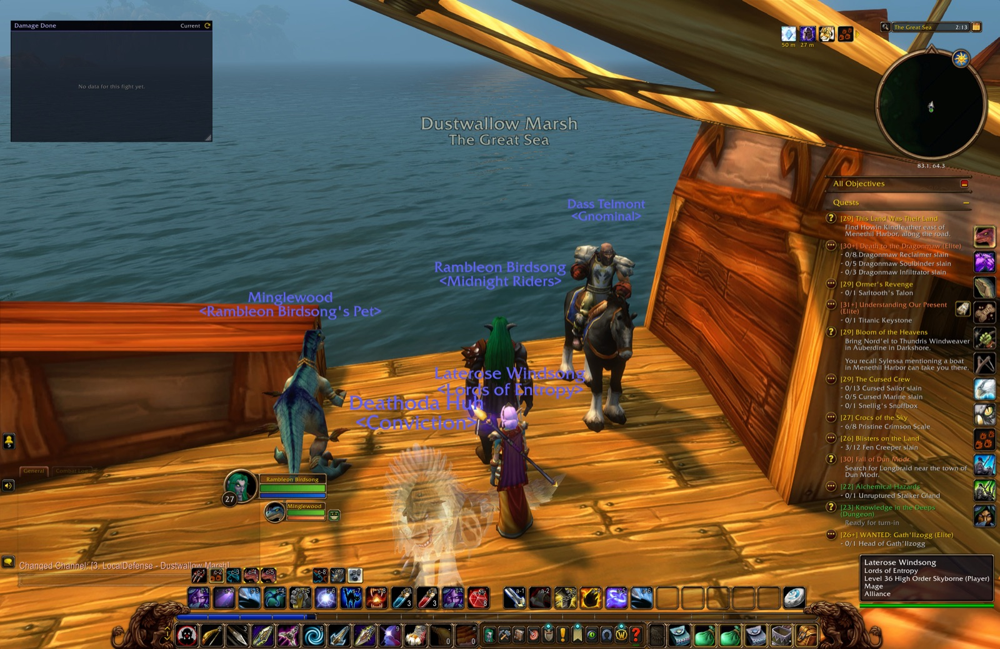
2:13 PM — Entered Dustwallow Marsh - 2:13 PM — Entered Theramore Isle (Dustwallow Marsh)
- 2:13 PM — Sailed from Menethil Harbor to Theramore Isle
- 2:14 PM — Discovered Theramore Isle
- 2:14 PM — Discovered Theramore Isle
- 2:14 PM — Found the flight path at Theramore Isle
- 2:15 PM — Discovered Dustwallow Marsh
- 2:15 PM — Entered Dustwallow Marsh
- 2:15 PM — Entered Theramore Isle (Dustwallow Marsh)
- 2:16 PM — Flew from Theramore Isle to Auberdine, Darkshore
- 2:17 PM — Entered The Great Sea (Dustwallow Marsh)
- 2:17 PM — Entered Dreadmurk Shore (Dustwallow Marsh)
- 2:17 PM — Entered The Merchant Coast (The Barrens)
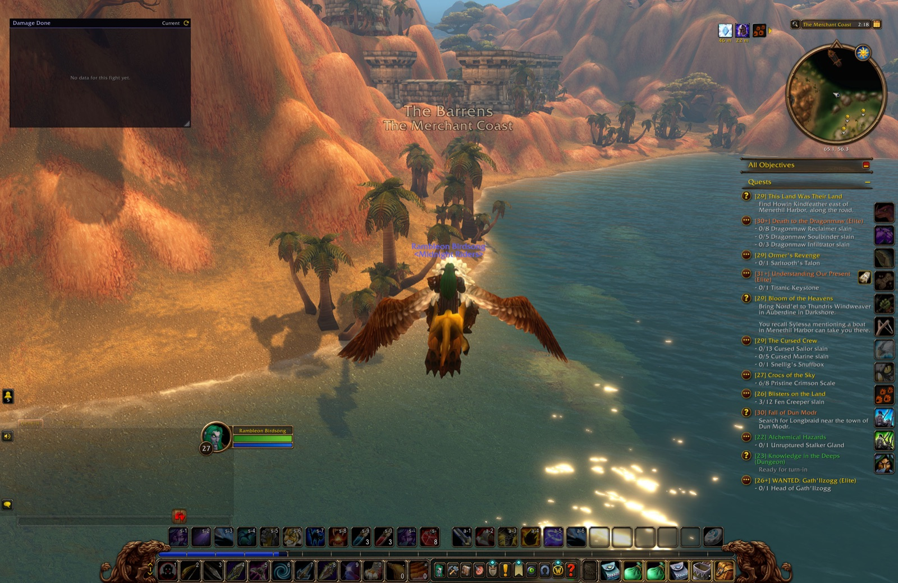
2:18 PM — Entered The Barrens - 2:18 PM — Entered Northwatch Hold (The Barrens)
- 2:18 PM — Entered Southern Barrens (The Barrens)
- 2:18 PM — Entered Bramblescar (The Barrens)
- 2:19 PM — Entered Southern Barrens (The Barrens)
- 2:19 PM — Entered Southern Gold Road (The Barrens)
- 2:19 PM — Entered Southern Barrens (The Barrens)
- 2:19 PM — Entered Agama'gor (The Barrens)
- 2:19 PM — Entered Southern Barrens (The Barrens)
- 2:19 PM — Entered Galak Camp (Mulgore)
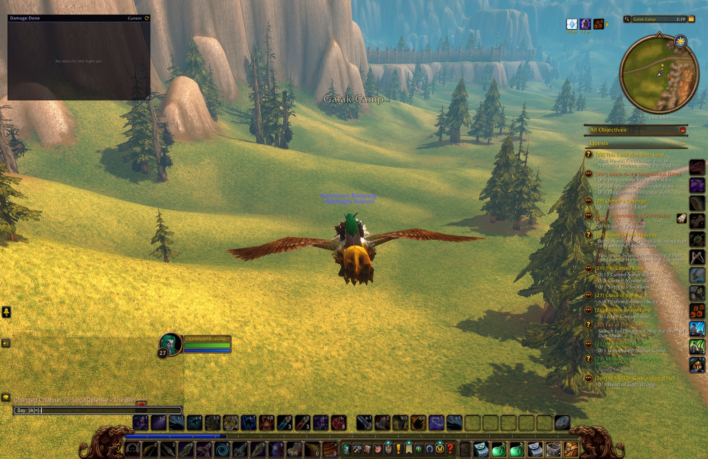
2:19 PM — Entered Mulgore - 2:19 PM — Entered The Rolling Plains (Mulgore)
- 2:19 PM — Entered Mulgore
- 2:20 PM — Entered Winterhoof Water Well (Mulgore)
- 2:20 PM — Entered Mulgore
- 2:20 PM — Entered Bristleback Retreat (Shen'dralas)
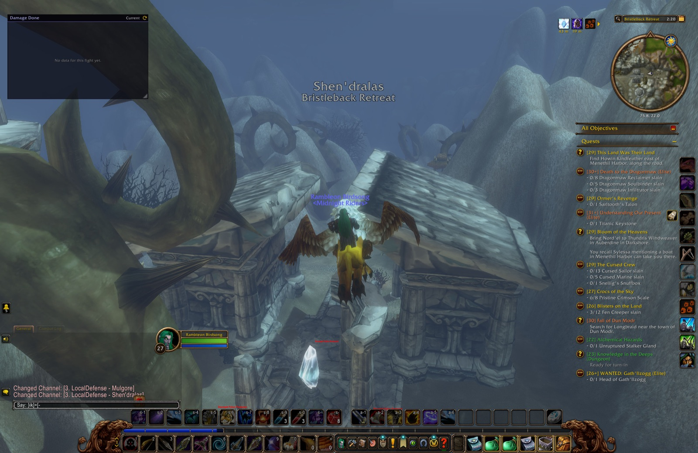
2:20 PM — Entered Shen'dralas - 2:21 PM — Entered Magram Village (Desolace)
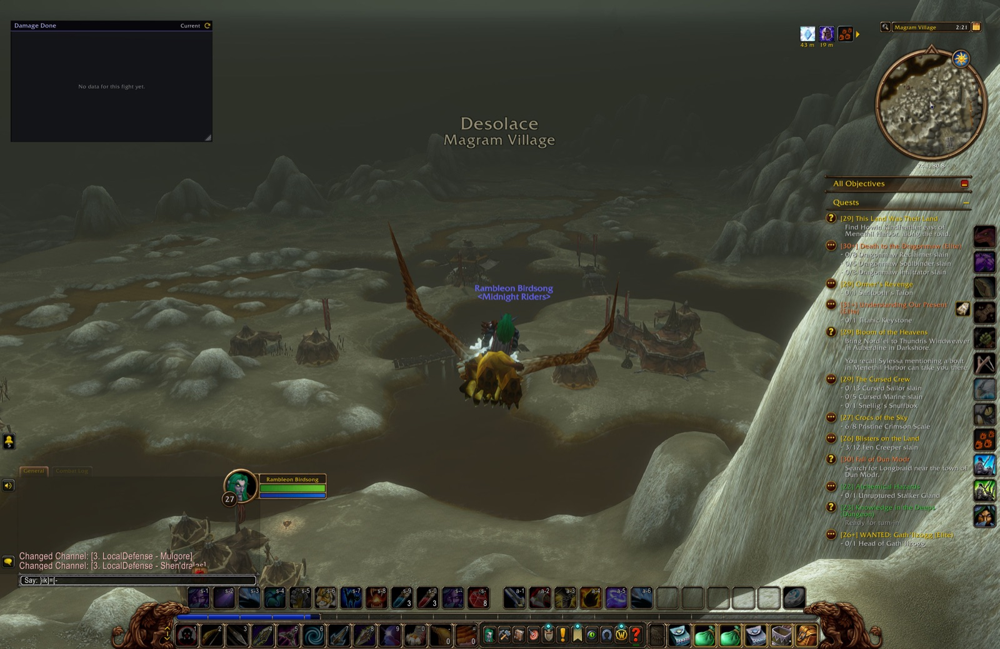
2:21 PM — Entered Desolace - 2:21 PM — Entered Desolace
- 2:21 PM — Entered Kolkar Village (Desolace)
- 2:21 PM — Entered Desolace
- 2:22 PM — Entered Kormek's Hut (Desolace)
- 2:22 PM — Entered Desolace
- 2:22 PM — Entered The Charred Vale (Stonetalon Mountains)
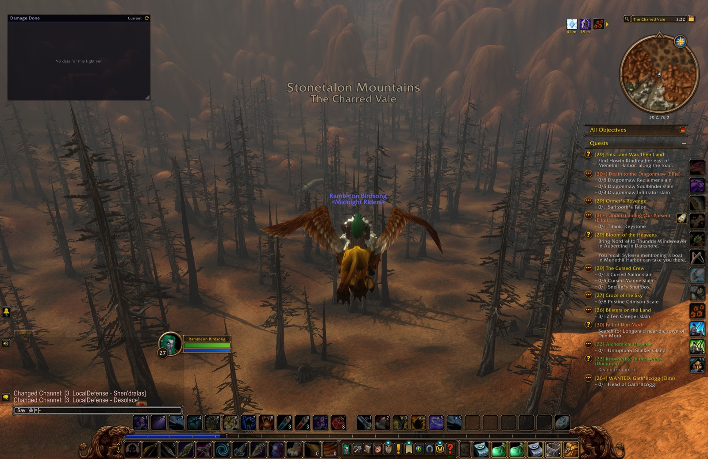
2:22 PM — Entered Stonetalon Mountains - 2:23 PM — Entered Stonetalon Mountains
- 2:23 PM — Entered Stonetalon Peak (Stonetalon Mountains)
- 2:24 PM — Entered Stonetalon Mountains
- 2:24 PM — Entered The Veiled Sea (Ashenvale)
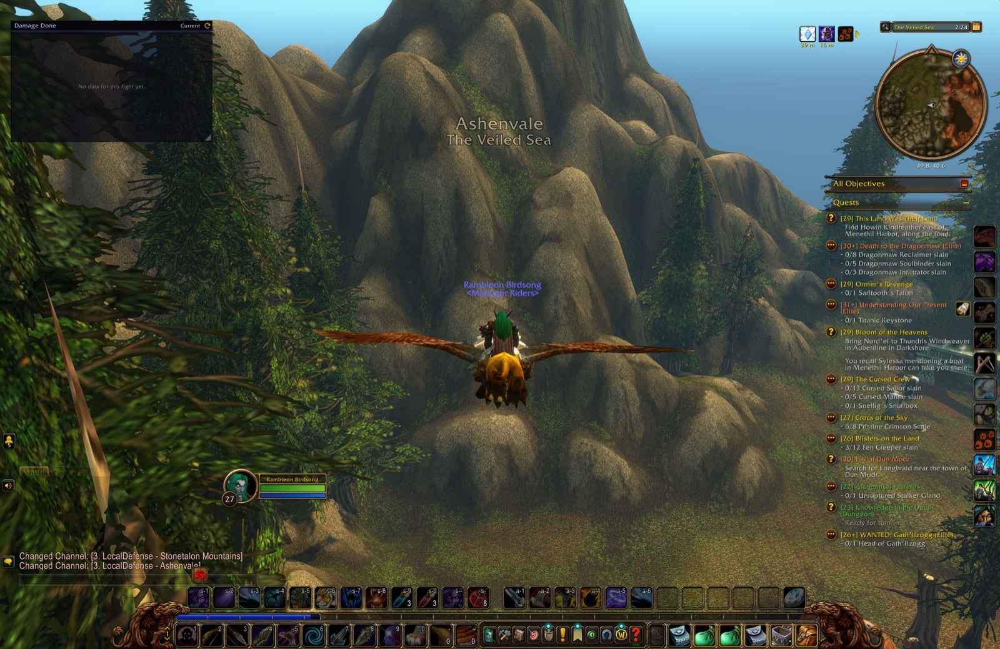
2:24 PM — Entered Ashenvale - 2:24 PM — Entered The Zoram Strand (Ashenvale)
- 2:25 PM — Entered Twilight Shore (Darkshore)
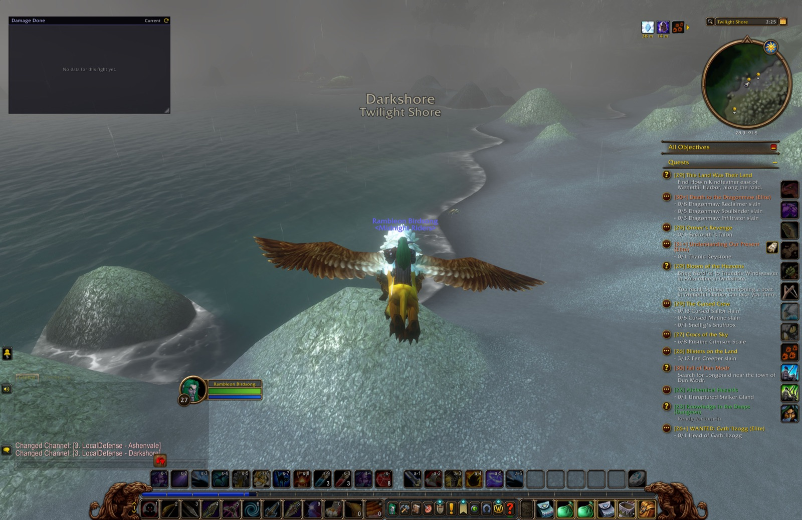
2:25 PM — Entered Darkshore - 2:27 PM — Entered The Long Wash (Darkshore)
- 2:27 PM — Entered Auberdine (Darkshore)
- 2:30 PM — Completed "Bloom of the Heavens"
- 2:32 PM — Learned |cff71d5ff|Hspell:1293241:0|h[Summon Hawk (Rank 1)]|h|r
- 2:32 PM — Learned Summon Hawk
- 2:49 PM — Flew from Auberdine to Astranaar, Ashenvale
- 2:49 PM — Entered The Long Wash (Darkshore)
- 2:49 PM — Entered Twilight Shore (Darkshore)
- 2:50 PM — Entered The Zoram Strand (Ashenvale)
- 2:50 PM — Entered Ashenvale
- 2:51 PM — Entered Lake Falathim (Ashenvale)
- 2:51 PM — Entered The Shrine of Aessina (Ashenvale)
- 2:51 PM — Entered Ashenvale
- 2:51 PM — Entered Astranaar (Ashenvale)
- 2:55 PM — Accepted "Kayneth Stillwind"
- 2:55 PM — Take Shindrell's Note to Kayneth Stillwind in Forest Song. — "Kayneth Stillwind"
- 2:55 PM — Accepted "Pridewings of Stonetalon"
- 3:45 PM — Entered Astranaar (Ashenvale)
- 3:45 PM — Joined forces with Cassidy (Druid)
- 3:47 PM — Entered Ashenvale
- 3:50 PM — First Foulweald Den Watcher slain
- 3:50 PM — 1/1 Foulweald Den Watcher slain — "An Aggressive Defense"
- 3:50 PM — Joined forces with Klng (Paladin)
- 3:50 PM — First Foulweald Warrior slain
- 3:51 PM — First Foulweald Ursa slain
- 3:51 PM — 2/2 Foulweald Ursa slain — "An Aggressive Defense"
- 3:51 PM — Joined forces with Honeydew (Druid)
- 3:52 PM — First Foulweald Shaman slain
- 3:53 PM — Entered Greenpaw Village (Ashenvale)
- 3:53 PM — Discovered Greenpaw Village
- 3:53 PM — Discovered Greenpaw Village
- 3:53 PM — First Foulweald Totemic slain
- 3:54 PM — First Foulweald Pathfinder slain
- 3:55 PM — First Enraged Foulweald slain
- 3:56 PM — Entered Ashenvale
- 3:56 PM — First Shadowhorn Stag slain
- 3:59 PM — Entered Greenpaw Village (Ashenvale)
- 4:00 PM — Joined forces with Torvald (Hunter)
- 4:01 PM — 10/10 Foulweald Totemic slain — "An Aggressive Defense"
- 4:01 PM — Parted ways with Klng
- 4:03 PM — 12/12 Foulweald Warrior slain — "An Aggressive Defense"
- 4:04 PM — Discovered Raynewood Retreat
- 4:04 PM — Discovered Raynewood Retreat
- 4:04 PM — Entered Raynewood Retreat (Ashenvale)
- 4:04 PM — Parted ways with Cassidy
- 4:04 PM — Parted ways with Honeydew
- 4:04 PM — Parted ways with Torvald
- 4:04 PM — Entered Greenpaw Village (Ashenvale)
- 4:04 PM — Discovered Nightsong Woods
- 4:04 PM — Entered Nightsong Woods (Ashenvale)
- 4:05 PM — Entered Raynewood Retreat (Ashenvale)
- 4:06 PM — Joined forces with Cassidy (Druid)
- 4:06 PM — First Ashenvale Bear slain
- 4:06 PM — Entered Ashenvale
- 4:08 PM — Entered Moonwell (Ashenvale)
- 4:08 PM — Discovered Moonwell
- 4:08 PM — Completed "Raene's Cleansing"
- 4:08 PM — Accepted "Raene's Cleansing"
- 4:08 PM — Entered Ashenvale
- 4:11 PM — Entered Raynewood Retreat (Ashenvale)
- 4:11 PM — Entered Nightsong Woods (Ashenvale)
- 4:12 PM — Entered The Shady Nook (Ashenvale)
- 4:12 PM — Discovered The Shady Nook
- 4:14 PM — First Elder Ashenvale Bear slain
- 4:14 PM — Entered Nightsong Woods (Ashenvale)
- 4:15 PM — Entered The Shady Nook (Ashenvale)
- 4:15 PM — Entered Nightsong Woods (Ashenvale)
- 4:15 PM — Discovered Falfarren River
- 4:15 PM — Entered Falfarren River (Ashenvale)
- 4:15 PM — Accepted "Gleaming Crescent Necklace"
- 4:16 PM — Entered Nightsong Woods (Ashenvale)
- 4:16 PM — Entered Falfarren River (Ashenvale)
- 4:16 PM — Entered Nightsong Woods (Ashenvale)
- 4:16 PM — First Ghostpaw Alpha slain
- 4:16 PM — Looted Recipe: Elixir of Detect Lesser Invisibility (Uncommon)
- 4:16 PM — Joined forces with Sachodeus (Mage)
- 4:16 PM — Parted ways with Cassidy
- 4:16 PM — Parted ways with Sachodeus
- 4:18 PM — Entered Falfarren River (Ashenvale)
- 4:18 PM — Entered Nightsong Woods (Ashenvale)
- 4:18 PM — Entered Falfarren River (Ashenvale)
- 4:19 PM — First Wildthorn Venomspitter slain
- 4:19 PM — Entered Nightsong Woods (Ashenvale)
- 4:19 PM — Entered Falfarren River (Ashenvale)
- 4:21 PM — Entered Xavian (Ashenvale)
- 4:21 PM — Discovered Xavian
- 4:21 PM — Discovered Night Run
- 4:21 PM — Discovered Night Run
- 4:22 PM — Entered Night Run (Ashenvale)
- 4:22 PM — Entered Xavian (Ashenvale)
- 4:22 PM — Entered Falfarren River (Ashenvale)
- 4:23 PM — Entered Xavian (Ashenvale)
- 4:24 PM — Joined forces with Cassidy (Druid)
- 4:25 PM — First Xavian Rogue slain
- 4:26 PM — Slain by Xavian Felsworn in Xavian
- 4:26 PM — Entered Nightsong Woods (Ashenvale)
- 4:26 PM — Entered Xavian (Ashenvale)
- 4:26 PM — Back among the living
- 4:27 PM — Discovered Satyrnaar
- 4:27 PM — Discovered Satyrnaar
- 4:27 PM — Entered Satyrnaar (Ashenvale)
- 4:28 PM — 1/1 Free the Highborne soul in Satyrnaar — "The Tower of Althalaxx"
- 4:28 PM — Discovered Forest Song
- 4:28 PM — Entered Forest Song (Ashenvale)
- 4:29 PM — Completed "Kayneth Stillwind"
- 4:29 PM — Accepted "Forsaken Diseases"
- 4:29 PM — Accepted "Vengeful Trail"
- 4:29 PM — Entered Nightsong Woods (Ashenvale)
- 4:30 PM — Parted ways with Cassidy
- 4:30 PM — Joined forces with Cassidy (Druid)
- 4:33 PM — Discovered The Dor'Danil Barrow Den
- 4:33 PM — Discovered The Dor'Danil Barrow Den
- 4:33 PM — Entered The Dor'Danil Barrow Den (Ashenvale)
- 4:34 PM — First Forsaken Infiltrator slain
- 4:35 PM — Slain by Forsaken Intruder in The Dor'Danil Barrow Den
- 4:35 PM — Entered Nightsong Woods (Ashenvale)
- 4:36 PM — Entered The Dor'Danil Barrow Den (Ashenvale)
- 4:36 PM — Back among the living
- 4:37 PM — Entered Nightsong Woods (Ashenvale)
- 4:37 PM — Entered Splintertree Post (Ashenvale)
- 4:37 PM — Discovered Splintertree Post
- 4:37 PM — Discovered Splintertree Post
- 4:37 PM — Entered Nightsong Woods (Ashenvale)
- 4:38 PM — Slain by Splintertree Guard in Nightsong Woods
- 4:42 PM — Entered Splintertree Post (Ashenvale)
- 4:42 PM — Entered Nightsong Woods (Ashenvale)
- 4:43 PM — Back among the living
- 4:44 PM — Entered Falfarren River (Ashenvale)
- 4:44 PM — Entered Nightsong Woods (Ashenvale)
- 4:44 PM — Entered Raynewood Retreat (Ashenvale)
- 4:45 PM — Entered Ashenvale
- 4:47 PM — Entered Astranaar (Ashenvale)
- 4:47 PM — Completed "Gleaming Crescent Necklace"
- 4:47 PM — Looted Replica Crescent Necklace (Uncommon)
- 4:47 PM — Completed "An Aggressive Defense"
- 5:42 PM — Entered Astranaar (Ashenvale)
- 7:53 PM — Entered Astranaar (Ashenvale)
- 8:01 PM — Overheard in Astranaar: Mulberryx Juice, Øld Skøøl and Geblin Mekatorque (3 lines)
- 8:07 PM — Joined forces with Cassidy (Druid)
- 8:07 PM — Entered Ashenvale
- 8:13 PM — Entered Raynewood Retreat (Ashenvale)
- 8:13 PM — Entered Nightsong Woods (Ashenvale)
- 8:17 PM — Entered Falfarren River (Ashenvale)
- 8:17 PM — Entered Nightsong Woods (Ashenvale)
- 8:18 PM — Entered Splintertree Post (Ashenvale)
- 8:18 PM — Entered Nightsong Woods (Ashenvale)
- 8:18 PM — Entered Splintertree Post (Ashenvale)
- 8:18 PM — Entered Nightsong Woods (Ashenvale)
- 8:20 PM — Parted ways with Cassidy
- 8:28 PM — Joined forces with Cassidy (Druid)
- 8:28 PM — Joined forces with Bunny (Hunter)
- 8:28 PM — Joined forces with Vaowyn (Priest)
- 8:28 PM — Entered Southfury River (Ashenvale)
- 8:28 PM — Discovered Southfury River
- 8:29 PM — Discovered Southfury River
- 8:29 PM — Entered Southfury River (Azshara)

8:29 PM — Entered Azshara - 8:29 PM — Entered Southfury River (Ashenvale)
- 8:29 PM — Entered Nightsong Woods (Ashenvale)
- 8:29 PM — Hearthed home to Deepwater Tavern
- 8:29 PM — Entered Deepwater Tavern (Wetlands)
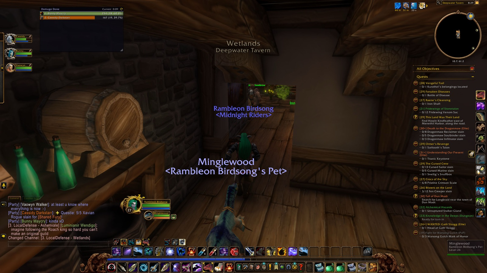
8:29 PM — Entered Wetlands - 8:29 PM — Entered Menethil Harbor (Wetlands)
- 8:30 PM — Entered Menethil Bay (Wetlands)
- 8:30 PM — Entered Wetlands
- 8:31 PM — Entered Bluegill Marsh (Wetlands)
- 8:31 PM — Joined forces with Totemic (Shaman)
- 8:32 PM — Entered Sundown Marsh (Wetlands)
- 8:33 PM — Entered Wetlands
- 8:34 PM — Completed "This Land Was Their Land"
- 8:34 PM — Entered The Green Belt (Wetlands)
- 8:34 PM — Entered Wetlands
- 8:34 PM — Entered The Green Belt (Wetlands)
- 8:35 PM — Entered Wetlands
- 8:35 PM — Discovered Thelgen Rock
- 8:35 PM — Discovered Thelgen Rock
- 8:35 PM — Entered Thelgen Rock (Wetlands)
- 8:37 PM — Entered Excavation Site: Wetlands (Wetlands)
- 8:37 PM — Entered Excavation Site: Wetlands
- 8:37 PM — Entered Excavation Site: Wetlands
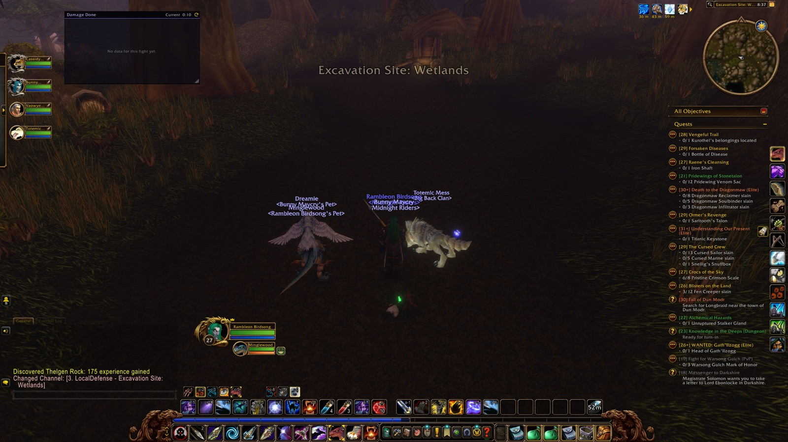
8:37 PM — Entered Excavation Site: Wetlands - 8:40 PM — Accepted "Songblade Search"
- 8:44 PM — Left Excavation Site: Wetlands
- 8:44 PM — Entered Excavation Site: Wetlands (Wetlands)
- 8:45 PM — Entered Thelgen Rock (Wetlands)
- 8:48 PM — First Highland Spider slain
- 8:48 PM — Entered Excavation Site: Wetlands (Wetlands)
- 8:49 PM — Entered Excavation Site: Wetlands
- 8:49 PM — Entered Excavation Site: Wetlands
- 8:52 PM — First Highland Snapper slain
- 8:52 PM — Entered Lost Marsh (Excavation Site: Wetlands)
- 8:53 PM — Entered Excavation Site: Wetlands
- 8:53 PM — Entered Lost Marsh (Excavation Site: Wetlands)
- 8:53 PM — First Young Crocolisk slain
- 8:53 PM — First Elder Crocolisk slain
- 8:54 PM — Looted Chrome Ring of the Monkey (Uncommon)
- 8:54 PM — First Marsh Skulker slain
- 8:55 PM — First Marsh Crocolisk slain
- 9:00 PM — Looted Fighter Broadsword of the Bandit (Uncommon)
- 9:02 PM — Died in Lost Marsh
- 9:03 PM — Left Excavation Site: Wetlands
- 9:03 PM — Entered Wetlands
- 9:04 PM — Entered The Green Belt (Wetlands)
- 9:04 PM — Entered Wetlands
- 9:04 PM — Entered Mosshide Fen (Wetlands)
- 9:05 PM — Entered Thelgen Rock (Wetlands)
- 9:05 PM — Back among the living
- 9:05 PM — Entered Excavation Site: Wetlands
- 9:05 PM — Entered Lost Marsh (Excavation Site: Wetlands)
- 9:08 PM — Defeated Saltspine
- 9:08 PM — First Saltspine slain
- 9:10 PM — First Young Riptooth slain
- 9:10 PM — Entered Stalker's Thicket (Excavation Site: Wetlands)
- 9:10 PM — Entered Lost Marsh (Excavation Site: Wetlands)
- 9:10 PM — Entered Stalker's Thicket (Excavation Site: Wetlands)
- 9:10 PM — Entered Lost Marsh (Excavation Site: Wetlands)
- 9:10 PM — Entered Stalker's Thicket (Excavation Site: Wetlands)
- 9:11 PM — First Thicket Lurker slain
- 9:12 PM — First Thicket Matriarch slain
- 9:13 PM — Died in Stalker's Thicket
- 9:13 PM — Left Excavation Site: Wetlands
- 9:13 PM — Entered Wetlands
- 9:13 PM — Entered The Green Belt (Wetlands)
- 9:13 PM — Entered Wetlands
- 9:14 PM — Entered Thelgen Rock (Wetlands)
- 9:15 PM — Entered Excavation Site: Wetlands (Wetlands)
- 9:15 PM — Entered Excavation Site: Wetlands
- 9:15 PM — Back among the living
- 9:15 PM — Entered Excavation Site: Wetlands
- 9:16 PM — Entered Lost Marsh (Excavation Site: Wetlands)
- 9:17 PM — Entered Stalker's Thicket (Excavation Site: Wetlands)
- 9:18 PM — First Thicket Hunter slain
- 9:21 PM — Defeated Shadetooth
- 9:21 PM — First Shadetooth slain
- 9:25 PM — 4/4 Thicket Raptor Hide — "Highland Hides"
- 9:27 PM — Entered Lost Dig Site (Excavation Site: Wetlands)
- 9:28 PM — First Dragonmaw Thaumaturgist slain
- 9:28 PM — First Dragonmaw Saboteur slain
- 9:28 PM — First Dragonmaw Warder slain
- 9:31 PM — Completed "Songblade Search"
- 9:31 PM — Accepted "Fallen in the Fen"
- 9:35 PM — First Highland Horror slain
- 9:37 PM — First Highland Lurker slain
- 9:40 PM — Entered Site of the Guardian (Excavation Site: Wetlands)
- 9:40 PM — Entered Lost Dig Site (Excavation Site: Wetlands)
- 9:41 PM — Entered Site of the Guardian (Excavation Site: Wetlands)
- 9:41 PM — Entered Lost Dig Site (Excavation Site: Wetlands)
- 9:41 PM — Entered Site of the Guardian (Excavation Site: Wetlands)
- 9:41 PM — Entered Lost Dig Site (Excavation Site: Wetlands)
- 9:43 PM — Entered Site of the Guardian (Excavation Site: Wetlands)
- 9:45 PM — 1/1 Learn what happened to Ardin Grassman — "Lost in the Thicket Things"
- 9:45 PM — Completed "Lost in the Thicket Things"
- 9:45 PM — Accepted "Heartwoven"
- 9:45 PM — Return to Caitlin Grassman in Menethil Harbor. — "Heartwoven"
- 9:47 PM — Defeated Relic Guardian
- 9:47 PM — First Relic Guardian slain
- 9:47 PM — Accepted "Lost Relic Carry"
- 9:47 PM — 1/1 Titan Relic — "Lost Relic Carry"
- 9:48 PM — Entered Stalker's Thicket (Excavation Site: Wetlands)
- 9:50 PM — Entered Lost Marsh (Excavation Site: Wetlands)
- 9:50 PM — Entered Excavation Site: Wetlands
- 9:51 PM — Parted ways with Totemic
- 9:51 PM — Left Excavation Site: Wetlands
- 9:51 PM — Entered Excavation Site: Wetlands (Wetlands)
- 9:52 PM — Entered Thelgen Rock (Wetlands)
- 9:53 PM — Entered Wetlands
- 9:53 PM — Entered Mosshide Fen (Wetlands)
- 9:53 PM — Entered Wetlands
- 9:54 PM — Entered The Green Belt (Wetlands)
- 9:55 PM — Entered Wetlands
- 9:56 PM — Entered Sundown Marsh (Wetlands)
- 9:57 PM — Entered Wetlands
- 9:57 PM — Entered Bluegill Marsh (Wetlands)
- 9:57 PM — Entered Wetlands
- 9:57 PM — Entered Bluegill Marsh (Wetlands)
- 9:57 PM — Entered Wetlands
- 9:58 PM — Entered Whelgar's Excavation Site (Wetlands)
- 9:59 PM — Completed "Lost Relic Carry"
- 9:59 PM — Accepted "Prehistoric Prism"
- 9:59 PM — Bring the Titan Relic to High Explorer Magellas in Ironforge's Hall of Explorers. — "Prehistoric Prism"
- 9:59 PM — Hearthed home to Deepwater Tavern
- 9:59 PM — Entered Deepwater Tavern (Wetlands)
- 9:59 PM — Entered Menethil Harbor (Wetlands)
- 10:00 PM — Reached Level 28
- 10:00 PM — Completed "Heartwoven"
- 10:00 PM — Looted Satchel of Potions (Uncommon)
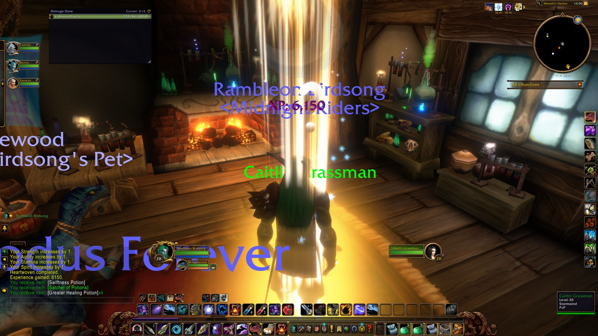
10:00 PM — Reached Level 28 in Menethil Harbor - 10:01 PM — Completed "Highland Hides"
- 10:02 PM — Flew from Menethil Harbor to Stormwind, Elwynn
- 10:02 PM — Entered Menethil Bay (Wetlands)
- 10:02 PM — Entered Wetlands
- 10:02 PM — Entered Dun Morogh
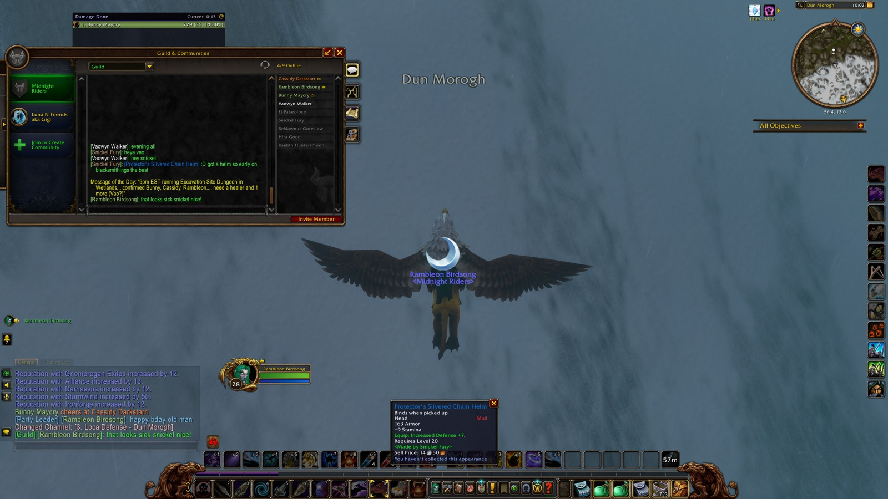
10:02 PM — Entered Dun Morogh - 10:03 PM — Entered Gates of Ironforge (Dun Morogh)
- 10:03 PM — Entered Dun Morogh
- 10:03 PM — Entered Steelgrill's Depot (Dun Morogh)
- 10:03 PM — Entered Dun Morogh
- 10:03 PM — Entered Kharanos (Dun Morogh)
- 10:03 PM — Entered Dun Morogh
- 10:04 PM — Entered Searing Gorge
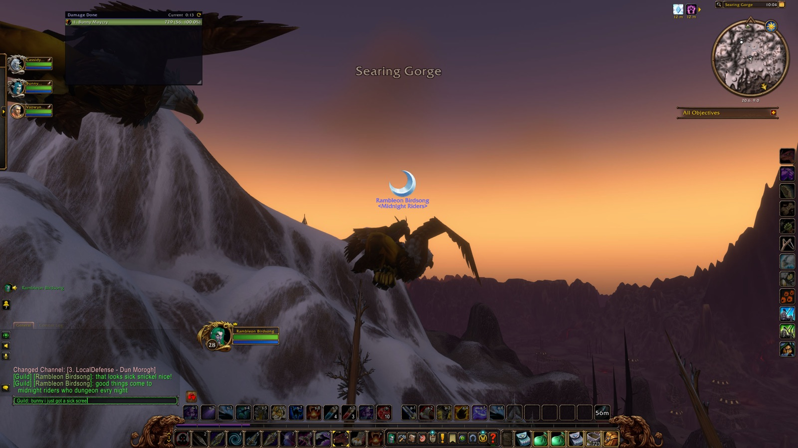
10:04 PM — Entered Searing Gorge - 10:04 PM — Entered Firewatch Ridge (Searing Gorge)
- 10:04 PM — Entered Searing Gorge
- 10:04 PM — Entered Blackchar Cave (Searing Gorge)
- 10:04 PM — Entered Searing Gorge
- 10:04 PM — Entered Burning Steppes
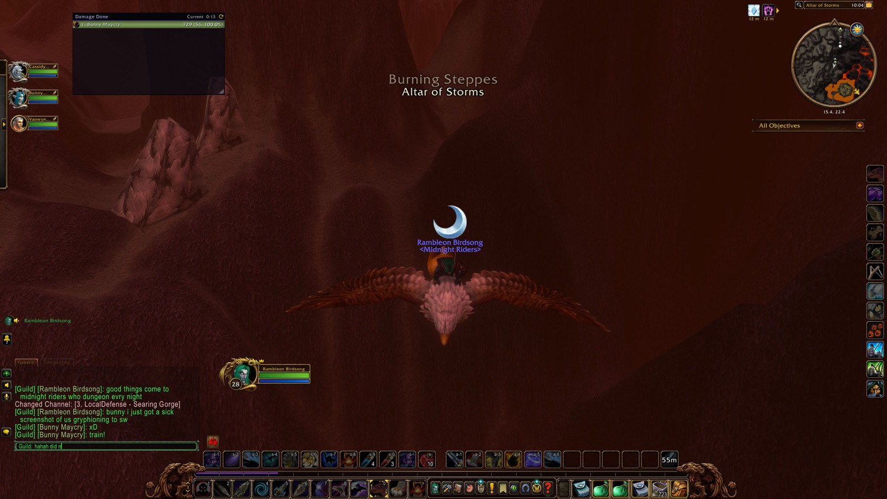
10:04 PM — Entered Burning Steppes - 10:04 PM — Entered Altar of Storms (Burning Steppes)
- 10:05 PM — Entered Burning Steppes
- 10:05 PM — Entered Draco'dar (Burning Steppes)
- 10:05 PM — Entered Burning Steppes
- 10:05 PM — Entered Elwynn Forest
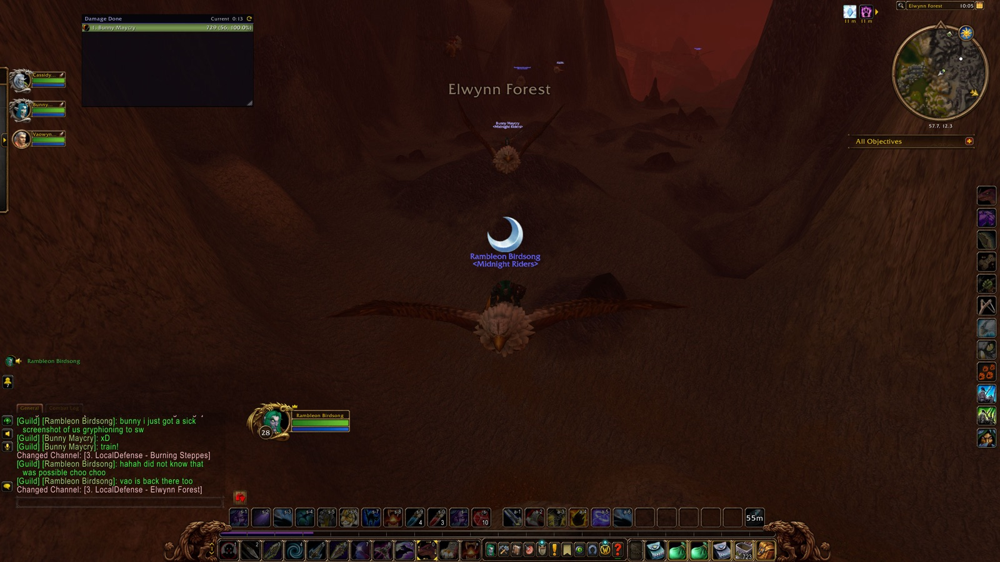
10:05 PM — Entered Elwynn Forest - 10:05 PM — Entered Northshire Valley (Elwynn Forest)
- 10:06 PM — Entered Elwynn Forest
- 10:06 PM — Entered Valley of Heroes (Stormwind City)
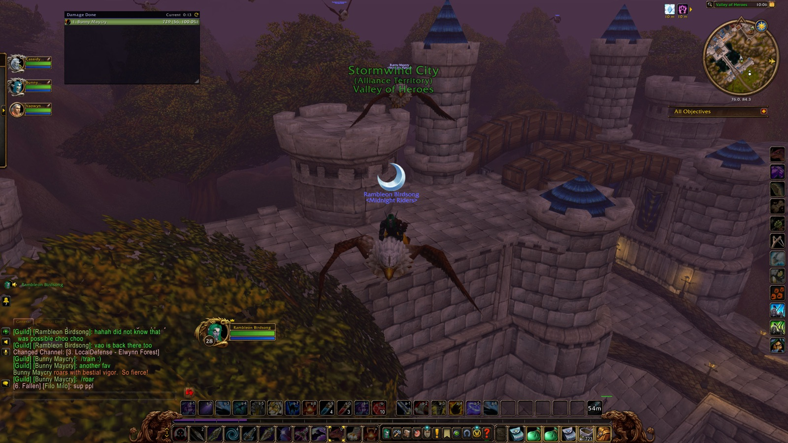
10:06 PM — Entered Stormwind City - 10:06 PM — Entered Trade District (Stormwind City)
- 10:09 PM — Entered The Canals (Stormwind City)
- 10:10 PM — Entered Trade District (Stormwind City)
- 10:12 PM — Entered The Canals (Stormwind City)
- 10:13 PM — Entered Trade District (Stormwind City)
- 10:13 PM — Entered The Canals (Stormwind City)
- 10:14 PM — Joined forces with Bahaha (Hunter)
- 10:14 PM — Parted ways with Bahaha
- 10:15 PM — Accepted "Crime and Punishment"
- 10:16 PM — Joined forces with Ranes (Warlock)
- 10:16 PM — Overheard in The Canals: Robyn Yaass and Lavon Undone (3 lines)
- 10:17 PM — Entered Stormwind City
- 10:17 PM — Entered Stormwind Stockade
- 10:17 PM — Entered Stormwind Stockade
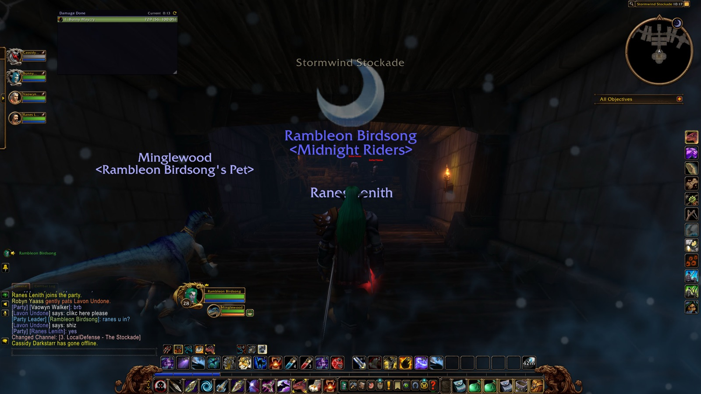
10:17 PM — Entered Stormwind Stockade - 10:19 PM — First Defias Prisoner slain
- 10:19 PM — First Defias Captive slain
- 10:20 PM — First Defias Inmate slain
- 10:30 PM — First Defias Convict slain
- 10:32 PM — Looted Moss Agate (Uncommon)
- 10:38 PM — Looted Buccaneer's Orb of Nature Protection (Uncommon)
- 10:41 PM — Defeated Dextren Ward
- 10:41 PM — First Dextren Ward slain
- 10:42 PM — Looted Nightskulker Ring (Rare)
- 10:42 PM — 10/10 Red Wool Bandana — "The Color of Blood"
- 10:42 PM — 1/1 Hand of Dextren Ward — "Crime and Punishment"
- 10:44 PM — First Defias Insurgent slain
- 10:49 PM — Defeated Kam Deepfury
- 10:49 PM — First Kam Deepfury slain
- 10:51 PM — Defeated Hamhock
- 10:51 PM — First Hamhock slain
- 10:55 PM — Defeated Bazil Thredd
- 10:55 PM — First Bazil Thredd slain
- 10:57 PM — Defeated Targorr the Dread
- 10:57 PM — First Targorr the Dread slain
- 11:00 PM — Left Stormwind Stockade
- 11:00 PM — Entered Stormwind City
- 11:00 PM — Parted ways with Ranes
- 11:00 PM — Entered The Canals (Stormwind City)
- 11:00 PM — Entered Trade District (Stormwind City)
- 11:01 PM — Entered The Canals (Stormwind City)
- 11:01 PM — Parted ways with Vaowyn
- 11:01 PM — Entered Old Town (Stormwind City)
- 11:01 PM — Completed "The Color of Blood"
- 11:02 PM — Parted ways with Bunny
- 11:02 PM — Entered The Canals (Stormwind City)
- 11:03 PM — Entered Trade District (Stormwind City)
- 11:04 PM — Flew from Trade District to Lakeshire, Redridge
- 11:04 PM — Entered Valley of Heroes (Stormwind City)
- 11:04 PM — Entered Elwynn Forest
- 11:04 PM — Entered Goldshire (Elwynn Forest)
- 11:04 PM — Entered Elwynn Forest
- 11:05 PM — Entered Eastvale Logging Camp (Elwynn Forest)
- 11:05 PM — Entered Elwynn Forest
- 11:05 PM — Entered Three Corners (Redridge Mountains)
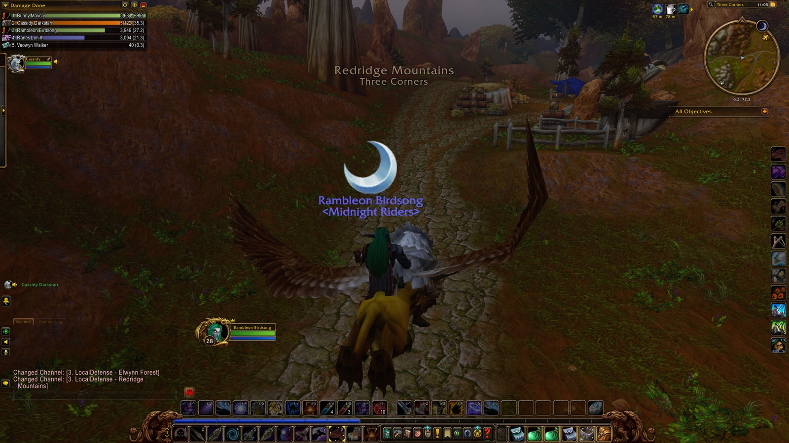
11:05 PM — Entered Redridge Mountains - 11:05 PM — Entered Redridge Mountains
- 11:06 PM — Entered Lake Everstill (Redridge Mountains)
- 11:07 PM — Entered Lakeshire (Redridge Mountains)
- 11:07 PM — Looted Daewyn's Girdle (Uncommon)
- 11:07 PM — Completed "Fallen in the Fen"
- 11:07 PM — Completed "What Comes Around..."
- 11:07 PM — Looted Lucine Longsword (Uncommon)
- 11:08 PM — Parted ways with Cassidy
- 11:09 PM — Entered Lake Everstill (Redridge Mountains)
- 11:09 PM — Entered Redridge Mountains
- 11:09 PM — Flew from Redridge Mountains to Ironforge, Dun Morogh
- 11:09 PM — Entered Three Corners (Redridge Mountains)
- 11:09 PM — Entered Elwynn Forest
- 11:09 PM — Entered Ridgepoint Tower (Elwynn Forest)
- 11:10 PM — Entered Elwynn Forest
- 11:10 PM — Entered Eastvale Logging Camp (Elwynn Forest)
- 11:10 PM — Entered Elwynn Forest
- 11:10 PM — Entered Tower of Azora (Elwynn Forest)
- 11:10 PM — Entered Crystal Lake (Elwynn Forest)
- 11:10 PM — Entered Goldshire (Elwynn Forest)
- 11:10 PM — Entered Elwynn Forest
- 11:11 PM — Entered Valley of Heroes (Stormwind City)
- 11:11 PM — Entered Elwynn Forest
- 11:11 PM — Entered Crystal Lake (Elwynn Forest)
- 11:11 PM — Entered Northshire Vineyards (Elwynn Forest)
- 11:11 PM — Entered Northshire Valley (Elwynn Forest)
- 11:12 PM — Entered Elwynn Forest
- 11:12 PM — Entered Burning Steppes
- 11:12 PM — Entered Draco'dar (Burning Steppes)
- 11:12 PM — Entered Blackrock Mountain (Burning Steppes)
- 11:12 PM — Entered Burning Steppes
- 11:12 PM — Entered Blackrock Stronghold (Burning Steppes)
- 11:13 PM — Entered Burning Steppes
- 11:13 PM — Entered The Sea of Cinders (Searing Gorge)
- 11:13 PM — Entered The Cauldron (Searing Gorge)
- 11:13 PM — Entered Searing Gorge
- 11:13 PM — Entered Firewatch Ridge (Searing Gorge)
- 11:14 PM — Entered Searing Gorge
- 11:14 PM — Entered Dun Morogh
- 11:14 PM — Entered The Tundrid Hills (Dun Morogh)
- 11:14 PM — Entered Dun Morogh
- 11:14 PM — Entered Kharanos (Dun Morogh)
- 11:14 PM — Entered Dun Morogh
- 11:14 PM — Entered Gates of Ironforge (Dun Morogh)
- 11:15 PM — Entered Ironforge

11:15 PM — Entered Ironforge - 11:15 PM — Entered The Great Forge (Ironforge)
- 11:24 PM — Entered Ironforge
- 11:24 PM — Entered Hall of Explorers (Ironforge)
- 11:25 PM — Completed "Prehistoric Prism"
- 11:25 PM — Looted Explorer's League Dustcover (Rare)
- 11:25 PM — Entered The Library (Ironforge)
- 11:26 PM — Accepted "Mythology of the Titans"
- 11:26 PM — Entered Hall of Explorers (Ironforge)
- 11:26 PM — Entered The Forlorn Cavern (Ironforge)
- 11:27 PM — Looted Sustaining Ring (Uncommon)
- 11:27 PM — Completed "Knowledge in the Deeps"
- 11:27 PM — Entered Hall of Explorers (Ironforge)
- 11:28 PM — Entered Tinker Town (Ironforge)
- 11:36 PM — Accepted "Data Rescue"
- 11:36 PM — Accepted "The Grand Betrayal"
- 11:37 PM — Accepted "Essential Artificials"
- 11:37 PM — Entered Hall of Explorers (Ironforge)
- 11:41 PM — Entered Ironforge
- 11:41 PM — Entered The Great Forge (Ironforge)
- 11:43 PM — Overheard in The Great Forge: Mini Manyclap, Karybdus Vin and Tracker Battleshot (3 lines)
- 11:44 PM — Entered Ironforge
- 11:45 PM — Entered Gates of Ironforge (Dun Morogh)
- 11:45 PM — Entered Dun Morogh
- 11:46 PM — Discovered Kharanos
- 11:46 PM — Discovered Kharanos
- 11:46 PM — Entered Kharanos (Dun Morogh)
- 11:46 PM — Completed "The Day After"
- 11:47 PM — Accepted "Gnogaine"
- 11:51 PM — Entered Dun Morogh
- 11:52 PM — Entered Gates of Ironforge (Dun Morogh)
- 11:52 PM — Entered Ironforge
- 11:53 PM — Entered The Great Forge (Ironforge)
- 11:53 PM — Flew from The Great Forge to Stormwind, Elwynn
- 11:53 PM — Entered Ironforge
- 11:53 PM — Entered Gates of Ironforge (Dun Morogh)
- 11:54 PM — Entered Dun Morogh
- 11:54 PM — Entered Steelgrill's Depot (Dun Morogh)
- 11:54 PM — Entered Dun Morogh
- 11:54 PM — Entered Kharanos (Dun Morogh)
- 11:54 PM — Entered Dun Morogh
- 11:54 PM — Entered Searing Gorge
- 11:54 PM — Entered Firewatch Ridge (Searing Gorge)
- 11:55 PM — Entered Searing Gorge
- 11:55 PM — Entered Blackchar Cave (Searing Gorge)
- 11:55 PM — Entered Searing Gorge
- 11:55 PM — Entered Altar of Storms (Burning Steppes)
- 11:55 PM — Entered Burning Steppes
- 11:55 PM — Entered Draco'dar (Burning Steppes)
- 11:55 PM — Entered Burning Steppes
- 11:56 PM — Entered Elwynn Forest
- 11:56 PM — Entered Northshire Valley (Elwynn Forest)
- 11:56 PM — Entered Elwynn Forest
- 11:57 PM — Entered Valley of Heroes (Stormwind City)
- 11:57 PM — Entered Trade District (Stormwind City)
- 11:58 PM — Abandoned "Pridewings of Stonetalon"
- 11:58 PM — Abandoned "On Guard in Stonetalon"
- 12:02 AM — Flew from Trade District to Sentinel Hill, Westfall
- 12:02 AM — Entered Valley of Heroes (Stormwind City)
- 12:02 AM — Entered Elwynn Forest
- 12:02 AM — Entered Mirror Lake (Elwynn Forest)
- 12:02 AM — Entered Mirror Lake Orchard (Elwynn Forest)
- 12:02 AM — Entered Elwynn Forest
- 12:02 AM — Entered Forest's Edge (Elwynn Forest)
- 12:03 AM — Entered Westfall

12:03 AM — Entered Westfall - 12:03 AM — Entered Saldean's Farm (Westfall)
- 12:03 AM — Entered Westfall
- 12:03 AM — Entered Sentinel Hill (Westfall)
- 12:10 AM — Entered Westfall
- 12:10 AM — Reached Level 29
- 12:10 AM — Discovered The Dead Acre
- 12:10 AM — Discovered The Dead Acre
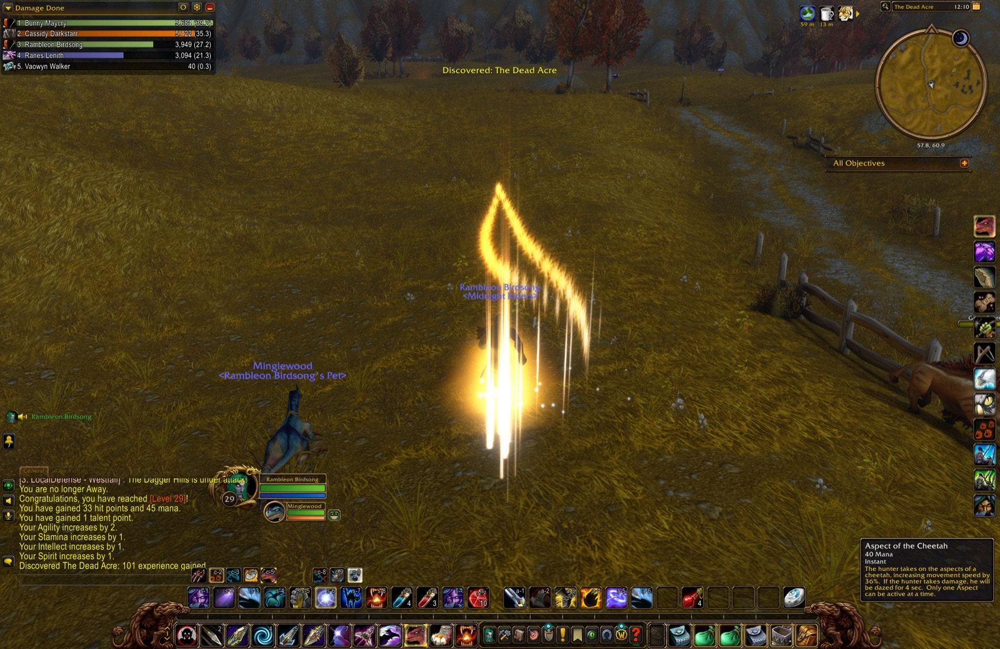
12:10 AM — Reached Level 29 in The Dead Acre - 12:10 AM — Entered The Dead Acre (Westfall)
- 12:10 AM — Entered Westfall
- 12:10 AM — Entered The Dead Acre (Westfall)
- 12:11 AM — Entered Westfall
- 12:11 AM — Discovered Duskwood
- 12:11 AM — Entered Duskwood
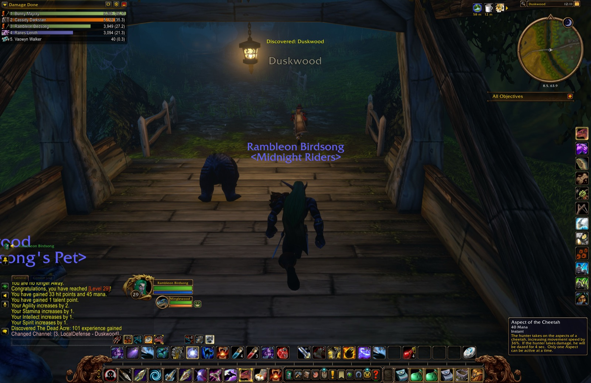
12:11 AM — Entered Duskwood - 12:17 AM — Discovered Darkshire
- 12:17 AM — Discovered Darkshire
- 12:17 AM — Entered Darkshire (Duskwood)
- 12:18 AM — Entered Darkshire Town Hall (Duskwood)
- 12:18 AM — Completed "Crime and Punishment"
- 12:18 AM — Looted Ambassador's Boots (Uncommon)
- 12:19 AM — Completed "Messenger to Darkshire"
- 12:19 AM — Accepted "Messenger to Darkshire"
- 12:19 AM — Return to Magistrate Solomon with Lord Ebonlocke's letter of response. — "Messenger to Darkshire"
- 12:19 AM — Entered Darkshire (Duskwood)
- 12:20 AM — Accepted "Worgen in the Woods"
- 12:20 AM — Accepted "The Hermit"
- 12:20 AM — Accepted "The Night Watch"
- 12:20 AM — Accepted "The Totem of Infliction"
- 12:21 AM — Accepted "The Legend of Stalvan"
- 12:21 AM — Entered Darkshire Town Hall (Duskwood)
- 12:21 AM — Completed "The Legend of Stalvan"
- 12:21 AM — Accepted "The Legend of Stalvan"
- 12:21 AM — Entered Darkshire (Duskwood)
- 12:22 AM — Entered Scarlet Raven Tavern (Duskwood)